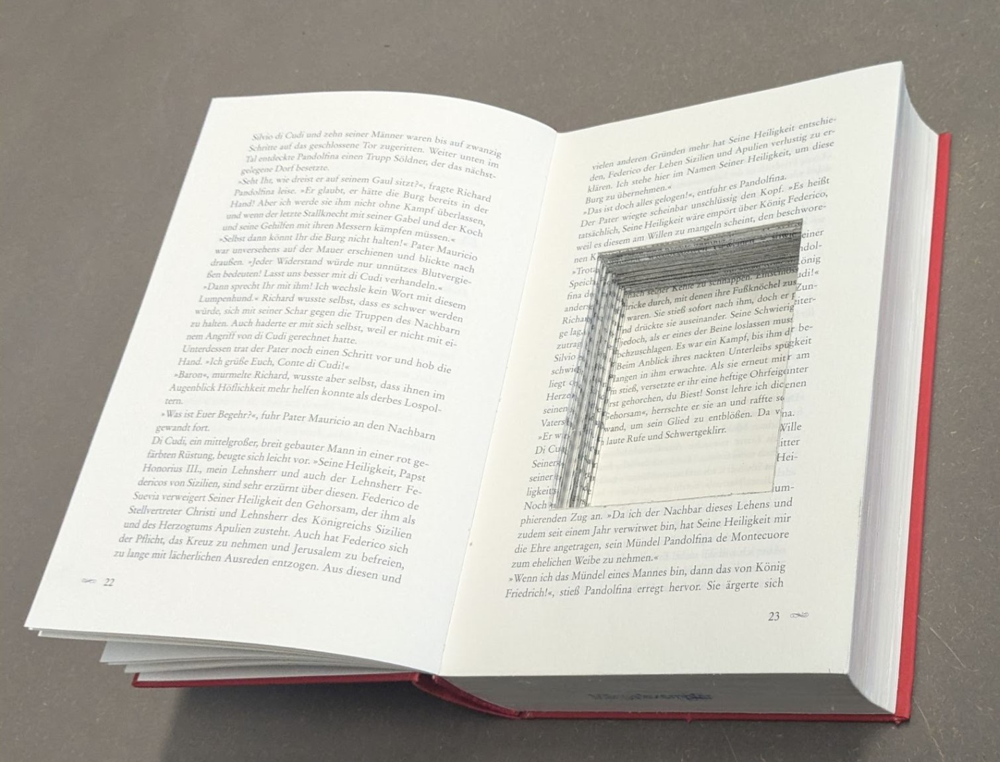

Schimmerleiter Lötkit
Dokumentation und Anleitungen
Dieses Kit bietet einen selbstständigen Lötworkshop, bei dem die Teilnehmenden durch eine Geschichte zum Löten angeleitet werden. Es ist Teil der Geschichte, herauszufinden, was eigentlich zusammengelötet wird.
Dieses Kit lädt ein, auf eine spannende Löt-Abenteuerreise zu gehen. Eine Geschichte begleitet die Teilnehmenden und lüftet nach und nach das Geheimnis.
ACHTUNG SPOILER, NICHT VERRATEN
Das Ergebnis des Kits ist ein eigener 30-Minuten-Lese-Timer. Er wird gestartet, sobald es hell um ihn herum wird und stoppt, wenn er wieder von der ursprünglichen Dunkelheit umgeben ist.
Löthilfe und Troubleshooting
Sicherheit
Verbrennungsgefahr
Lötkolben werden sehr heiß. Jeglicher Hautkontakt, sowie Kontakt zu brennbaren Materialien sollte vermieden werden.
Belüftung
Beim Löten entstehen Dämpfe, die gesundheitsschädlich sein können. Falls kein Lötrauchabsauger vorhanden ist, sollte die Arbeitsumgebung gut belüftet sein.
Vorbereitung und Werkzeugpflege
Lötkolben
- Für elektronische Schaltungen empfiehlt sich ein Lötkolben mit einer Leistung von 40-70 Watt.
Flussmittel
- Beim Löten verdampft das im Lötzinn enthaltene Flussmittel. Bei wiederholtem Erhitzen einer Lötstelle
kann es sinnvoll sein, zusätzliches Flussmittel aufzutragen.
Lötspitze
- Eine saubere Lötspitze ist entscheidend für gute Lötergebnisse. Dazu Lötreste an einem nassen Schwamm
abwischen. Zudem sollte die Lötspitze regelmäßig überprüft und bei Bedarf mit Lötzinn gereinigt werden.
Lötvorgang
Strom
- Bevor an der Platine gelötet wird, sollte sichergestellt werden, dass sie nicht mit Strom versorgt wird.
Die Batterien sollten erst eingesetzt werden, wenn die Platine fertig verlötet wurde.
Wärmeverteilung
- Damit eine stabile Lötstelle entsteht, müssen die zu verbindenden Metalle und das Lötzinn gleichmäßig erhitzt werden.
Dazu den Lötkolben so lange an alle drei Stellen halten, bis das Lötzinn geschmolzen ist und eine Verbindung entstanden ist.
Polung
- LEDs sind polarisiert. Es sollte darauf geachtet werden, dass der Strom in die richtige Richtung fließt.
Querverbindungen vermeiden
- Bei eng beieinander liegenden Lötstellen ist Vorsicht geboten, um Kurzschlüsse zu vermeiden.
Entlöten
- Falls eine Lötstelle korrigiert werden muss oder Lötzinn entfernt werden soll, kann eine Entlötpumpe
benutzt werden. Dazu das Lötzinn mit dem Lötkolben erhitzen, die Entlötpumpe ansetzen und aktivieren, um das flüssige Lötzinn abzusaugen.
Der Timer funktioniert nicht
Teile vertauscht
- Es sollte sichergestellt werden, dass sich alle Komponenten an der richtigen Stelle befinden.
Taschenlampe
- Um den Timer zu starten/stoppen, muss die rote LED angeleuchtet werden. Es kann sein,
dass sie zu kurz angeleuchtet wurde (kann 15 bis 30 Sekunden lang dauern) oder
der Helligkeitsunterschied nicht groß genug ist (hellere Taschenlampe / dunklere Umgebung).
Timing
- Die Anfangsmelodie und das Leuchten der blauen LED müssen vor dem Start des Timers abgewartet werden.
Querverbindungen
- Beim Löten von Lötstellen, die nah beieinander liegen, können Querverbindungen entstehen,
die zu einem Kurzschluss führen. Die Verbindung der beiden Bahnen muss unterbrochen werden. Dazu ist eine Entlötpumpe hilfreich.
ATtiny falsch herum
- Der ATtiny hat eine bestimmte Pinbelegung. Es muss darauf geachtet werden, dass sich die Kerbe auf der richtigen Seite befindet.
LED falsch herum
- Da die LEDs gepolt sind, ist es auch hier wichtig, sie richtig herum einzubauen. Neben dem Kondensator muss das
längere Bein an minus und neben dem Widerstand muss es an plus.
Anleitung zur Betreuung des Löt-Kits
Vorbereitung
Damit der Workshop reibungslos durchgeführt werden kann, sollten (neben dem Kit) folgende Materialien bereitgestellt werden:
Werkzeug:
- Lötkolben (mit Lötkolbenhalter)
- Lötschwamm
- Lötzinn
- Flachzange
- Seitenschneider
- Entlötpumpe
- Ebenfalls hilfreich:
‘Dritte Hand’ mit Krokodilklemmen
Sicherheit:
- Lötrauchabsauger (oder ein gut belüfteter Raum)
- Erste-Hilfe-Material (es besteht die Gefahr von Verbrennungen)
- (Hitzebeständige) Unterlage/Arbeitsplatte
- Schutzbrille
Nachfüllen des Workshop-Kits
Nach Abschluss eines Workshops gilt es, das Kit wieder einsatzbereit zu machen. Hierfür sind folgende Schritte notwendig:
Anregungen für einen DIY Löt-Workshop
Um was handelt es sich?
Diese Anleitung bietet einige Anregungen, um einen DIY-Löt-Workshop zu hosten. Die Kits (oder auch einzelne Teile) können für jeweils 14 €
bei uns bestellt werden.
Alternativ können die Teile selbst hergestellt/vorbereitet werden. Die Möglichkeiten, die hier vorgestellt werden, sind lediglich Vorschläge. Es gibt also meist auch andere Wege, um an das Ziel zu kommen.
Pro Kit wird benötigt:
Kit-Verpackung (Geschichte & Lesezeichen)
Säckchen
Platine
ATtiny85 (programmiert)
Elektronische Komponenten
Kit-Verpackung (inkl. Geschichte & Lesezeichen)
Damit der Workshop reibungslos durchgeführt werden kann, sollten (neben dem Kit) folgende Materialien bereitgestellt werden:
1.Bestellen beim Schimmerleiter Team:
2.Buch aushöhlen:
- Du benötigt zunächst ein (mindestens 3,5 cm) dickes, gebundenes Buch. Stelle sicher, dass das Buch groß genug ist, um DIN-A5-Seiten zu enthalten.
- Höhle das Buch aus. Lasse dabei die ersten 22 Seiten (circa) aus. Das Loch in dem Buch sollte mindestens 3 cm tief sein. Du kannst dazu hier eine Anleitung in Videoform finden.
- Schneide die ersten ausgelassenen Seiten aus dem Buch raus.
- Klebe die Geschichte, nachdem du das Buch fertig ausgehöhlt hast und es getrocknet ist, auf der Innenseite des Buchdeckels ein.
- Klebe dabei die leere Rückseite der Geschichte so in das Buch, dass sie von der Buchmitte aus geöffnet wird.
- Das ausgedruckte Lesezeichen legst du auf Seite 12 der Geschichte ein, sodass es passend zur Geschichte gefunden wird.
- Zum Schluss musst du noch dafür sorgen, dass der Titel “Der Schimmerleiter” auf der Verpackung steht.

3.Buch aus Karton/Pappe fertigen:
- Klebe die Geschichte auf der Innenseite des Buchdeckels ein.
- Klebe dabei die leere Rückseite der Geschichte so in das Buch, dass sie von der Buchmitte aus geöffnet wird.
- Das ausgedruckte Lesezeichen legst du auf Seite 12 der Geschichte ein, sodass es passend zur Geschichte gefunden wird.
Die Verpackungen können im Anschluss zu dem Workshop mitgegeben werden. Wenn du den Workshop nicht nur ein Mal anbieten möchtest, kannst du die Verpackungen
aber auch behalten und sparst dir die Arbeit für das nächste Mal.
Stoffsäckchen
1.Bestellen beim Schimmerleiter Team:
2.Nähen:
3.Bestellen:
Platine
1.Bestellen beim Schimmerleiter Team:
2.Selbst fräsen:
Falls dir eine CNC-Fräsmaschine zur Verfügung steht und du mit dieser umgehen kannst, findest du hier die CNC-Dateien [verlinken].
3.Fräsen/Ätzen lassen:
Stattdessen kannst du die Platinen auch fertigen lassen. Online lassen sich dazu verschiedene Anbieter finden.
4.Lochplatinen:
Eine weitere Möglichkeit ist die Nutzung von Lochplatinen.
ATTiny85
1.Bestellen beim Schimmerleiter Team:
2.Selbst programmieren (mit Arduino):
Du brauchst: 1x Arduino Uno, 1x Breadboard, 1x Elektrolytkondensator (10uF bis 100uF), 6x Verbindungskabel, 1x USB-C-auf-USB-A-Kabel
Windows
- Schritt 1: Downloade und entpacke `attiny_setup.zip`.
- Schritt 2: Doppelklicke auf `attinysetup.bat`.
(Sollte ein Windows Defender Fenster erscheinen, wähle 'Weitere Optionen' -> 'Trotzdem ausführen'.)
- Schritt 3: Folge den Anweisungen. Wenn dazu aufgefordert, verbinde den ATTiny85 wie abgebildet.
Linux
Du kannst `avrdude` verwenden, um die Binaries direkt auf den Attiny85 zu flashen.
- Die Binary-Dateien findest du in `attiny_setup.zip`.
- `avrdude` kann über die Kommandzeile heruntergeladen werden:
sudo apt-get install avrdude
Zunächst muss der Arduino Uno als Programmer geflasht werden. Schließe ihn dafür ohne ATTiny85 an.
-
Zum Flashen brauchst du den Namen des Ports über den der Arduino Uno angeschlossen ist.
Mit diesem Command kann der Arduino Uno geflasht werden. Füge dazu den entprechenden Portnamen ein.
avrdude -c arduino -p m328p -P [Portname] -U flash:w:ArduinoISP.hex
- Schritt 3: Folge den Anweisungen. Wenn dazu aufgefordert, verbinde den ATTiny85 wie abgebildet.
Im nächsten Schritt müssen die Fuses des ATTiny85 gesetzt werden (lfuse: 0xE2, hfuse: 0xDF, efuse: 0xFF).
- Verbinde dafür den ATTiny85 wie abgebildet mit dem Arduino Uno.
- Du kannst die folgenden Command verwenden:
avrdude -c arduino -b 19200 -p attiny85 -P [Portname] -U lfuse:w:0xE2:m
avrdude -c arduino -b 19200 -p attiny85 -P [Portname] -U hfuse:w:0xDF:m
avrdude -c arduino -b 19200 -p attiny85 -P [Portname] -U efuse:w:0xFF:m
Im letzen Schritt wird der ATTiny geflasht.
avrdude -c arduino -b 19200 -p attiny85 -P [Portname] -U flash:w:firmware.hex

Den Sourcecode findest du
hier.
Elektronische Komponenten
1.Bestellen beim Schimmerleiter Team:
2.Selbst bestellen: